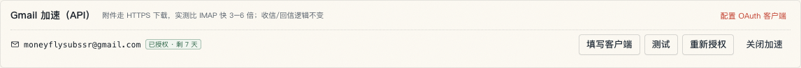
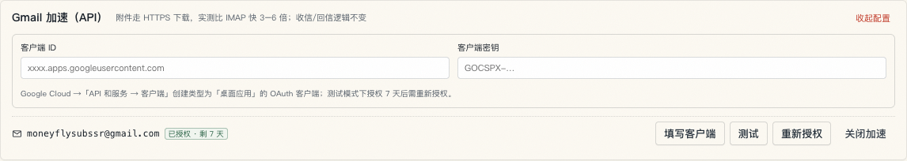

这份文档手把手教你在 Google Cloud 里创建 OAuth 客户端、在软件里完成授权， 并说明「令牌为什么会 7 天过期」「发布应用会不会审核不通过」这些容易踩坑的问题。 照着做约 10 分钟，之后 Gmail 附件自动走 HTTPS 下载，速度从约 0.35MB/s 提升到 1.5–2.2MB/s。
| 你关心的问题 | 答案 |
|---|---|
| 能快多少 | 实测 Gmail 附件从 0.35MB/s 提升到 1.5–2.2MB/s，约 4–5 倍；18MB 附件从约 50 秒降到约 8–9 秒。 |
| 要花多久配 | Google Cloud 里约 8 分钟 + 软件里 1 分钟；只需配一次（7 天重新点一次授权，见第 8 节）。 |
| 要不要花钱 | 不需要。Gmail API 有免费额度，个人用量远低于上限。 |
| 会不会审核不通过 | 不要把应用「发布」到生产：`gmail.readonly` 属于受限范围，正式发布要 Google 验证 + CASA 安全评估（费用高、周期长）。保持「测试中」模式即可正常使用。 |
| 收信、回信会变吗 | 不会。收信仍走 IMAP，回信仍走 SMTP；只有附件下载改走 Gmail API，失败自动回退 IMAP。 |
Gmail 对 IMAP 附件下载有服务端限速，单连接大致只有 0.3–0.8MB/s； 而 Gmail API 走的是普通 HTTPS 通道，和浏览器访问同一套网络，速度明显更高。 软件的做法是「收信仍走 IMAP，附件下载优先走 Gmail API」：
| 环节 | 通道 | 说明 |
|---|---|---|
| 收信 / 轮询 / 垃圾箱 | IMAP | 不变，UID 游标、去重逻辑都不动 |
| 附件下载 | Gmail API（HTTPS） | 需要你完成一次 OAuth 授权 |
| 下载失败 | 自动回退 IMAP | API 不可用时不影响收件 |
| 自动回信 | SMTP | 不变，仍用应用专用密码 |
| 附件 | IMAP | Gmail API | 提升 |
|---|---|---|---|
| 18.0MB ZIP | 51.6s（0.35MB/s） | 8.8s（2.04MB/s） | 5.8 倍 |
| 12.0MB ZIP | — | 7.6s（1.58MB/s） | — |
| 26.0MB ZIP | — | 18.1s（1.44MB/s） | — |
| 两个 8MB 附件 | 约 14.6s（串行） | 9.4s（并发） | 约省 35% |
| Gmail 账号 | 要收件的 Gmail 地址（例如 moneyflysubssr@gmail.com）。 |
| 网络 | 能打开 Google Cloud 控制台（需要代理）；软件下载附件时也会走系统代理。 |
| 软件版本 | v0.1.29 及以上（「邮箱账户」页有「Gmail 加速（API）」卡片）。 |
| 时间 | 首次配置约 10 分钟。 |
如果地址打不开，先打开 console.cloud.google.com，点顶部项目选择器 →「新建项目」。
console.cloud.google.com，用要收件的 Gmail 账号登录。MailHarbor →「创建」。MailHarbor，说明当前操作在新项目里。Gmail API → 点进详情 → 点「启用」。新版控制台在左侧「Google Auth Platform」或「OAuth 同意屏幕」下，分四块： 品牌信息、受众群体（测试用户）、数据访问（范围）、客户端。
新版控制台叫「Google Auth Platform」；如果打开的是旧版，用 https://console.cloud.google.com/apis/credentials/consent 也能进。
MailHarbor（或任意）。403 access_denied：「应用正在测试中，仅供已获开发者批准的测试人员使用」。https://www.googleapis.com/auth/gmail.readonly（只读，不能删信、不能发信）。MailHarbor-Desktop →「创建」。11622102430-xxxx.apps.googleusercontent.com）
GOCSPX-xxxxxxxxxxxxxxxxxxxxxxxx）


| 按钮 | 作用 |
|---|---|
| 测试 | 调用 Gmail API 读取账号信息，确认令牌可用 |
| 重新授权 | 令牌过期/失效后重新走一次浏览器授权 |
| 关闭加速 | 删除本机令牌，附件改回 IMAP 下载 |
| 下载记录 → 下载设置 → Gmail 加速 | 全局开关（开启/关闭 HTTPS 下载） |
Gmail API 附件下载完成：xxx.zip 12.0MB / 7.6s 说明走的是加速通道。| 报错 | 原因 | 处理 |
|---|---|---|
403 access_denied「应用正在测试中」 | 登录的账号不在测试用户列表 | 按 4.2 添加测试用户并保存，等 1–5 分钟后重试 |
401 invalid_client「OAuth client was not found」 | 客户端 ID 不完整/抄错，或客户端被删除 | 到「客户端」列表点复制，不要手抄；确认 ID 完整 |
invalid_client「client secret is invalid」 | 密钥抄错（大小写/数字看错） | 到客户端详情「重置密钥」，把新密钥完整粘贴 |
invalid_grant | 刷新令牌过期（测试模式 7 天）或已被撤销 | 点「重新授权」重新走一次 |
| Gmail API has not been used in project … | Gmail API 没启用 | 按第 3 节启用 Gmail API，等 1–2 分钟 |
| 授权后下载仍慢 | 全局开关被关闭 / 账号不是 Gmail / 会话超时 | 检查「下载设置 → Gmail 加速」为开；日志确认走的是 API |
| 浏览器打不开授权页 | 代理问题 | 确认系统代理可用；软件下载与授权都走系统代理 |
很多人卡在这里：授权成功，但 7 天后突然失效。原因是 Google 对「测试中」应用的限制。
| 令牌 | 有效期 | 软件怎么处理 |
|---|---|---|
| 访问令牌 | 1 小时 | 自动续期，你完全无感 |
| 刷新令牌 | 测试模式 7 天 | 到期后需重新授权一次（卡片会显示剩余天数） |
这是 Google 服务端策略：测试状态下刷新令牌 7 天强制失效，任何客户端代码都无法绕过。软件能做的是：提前显示剩余天数、失效时在卡片上标红提示、下载自动回退 IMAP 不丢件、一键重新授权。
| 方案 | 效果 | 代价 |
|---|---|---|
| 保持「测试中」（推荐） | 可用；7 天重新点一次授权（约 10 秒） | 无；软件已有提醒 |
| 发布到「生产」（不验证） | 受限范围会被拒绝授权，反而更糟 | 不可行 |
| 发布并提交验证 | 长期有效、无警告 | 隐私政策、演示视频、CASA 安全评估（数千美元、数周） |
| Workspace「内部应用」 | 长期有效、免验证 | 需要企业邮箱（Google Workspace） |
gmail.readonly 属于「受限范围」，未验证应用发布后授权会被 Google 拒绝；自用场景保持「测试中」最划算。把 OAuth 用户类型改成「内部」（Internal），仅组织内账号可用，免 Google 验证，刷新令牌长期有效，不需要每 7 天重新授权。
gmail.readonly，软件无法删除邮件、无法用 API 发信（回信走 SMTP）。| 步骤 | 地址 |
|---|---|
| 新建项目 | https://console.cloud.google.com/projectcreate |
| 启用 Gmail API | https://console.cloud.google.com/apis/library/gmail.googleapis.com |
| OAuth 概览（新版） | https://console.cloud.google.com/auth/overview |
| 品牌信息 | https://console.cloud.google.com/auth/branding |
| 受众群体 / 测试用户 | https://console.cloud.google.com/auth/audience |
| 数据访问（只读范围） | https://console.cloud.google.com/auth/scopes |
| 客户端列表 | https://console.cloud.google.com/auth/clients |
| 创建客户端（桌面应用） | https://console.cloud.google.com/auth/clients/create |
| 旧版 OAuth 同意屏幕 | https://console.cloud.google.com/apis/credentials/consent |
| API 和服务凭据 | https://console.cloud.google.com/apis/credentials |
提示：如果打开链接后想确认当前项目，看页面顶部的项目选择器是否显示 MailHarbor；链接会自动带上项目参数。
| OAuth 同意屏幕字段 | 填写内容 |
|---|---|
| 应用首页 | https://moneyfly006.github.io/mailharbor/ |
| 隐私政策链接 | https://moneyfly006.github.io/mailharbor/privacy.html |
| 服务条款链接 | https://moneyfly006.github.io/mailharbor/terms.html |
| 品牌图标 120×120 | https://moneyfly006.github.io/mailharbor/img/icon-120.png |
软件内已有速度显示；如果想单独对比 Gmail API 与 IMAP，可在安装目录运行：
node scripts/gmail-api-speed.mjs --client-id=你的ID --client-secret=你的密钥 # 或复用已保存令牌 node scripts/gmail-api-speed.mjs
脚本会打印授权链接、下载一个 5–60MB 附件并输出速度；令牌保存在用户目录，7 天有效。
除 Gmail API 外，软件对 IMAP 大附件还支持「分块下载 + 断点续传」：把整封邮件按 4MB 分块并行拉取， 已完成块记录在本地状态文件里；网络中断后重试只补缺失块，不从头重下。
| 邮箱 | 是否支持分块/续传 | 说明 |
|---|---|---|
| Gmail | 支持（但优先走 API） | API 更快，IMAP 仅作兜底 |
| QQ 邮箱 / 163 等 | 部分服务器不支持局部 FETCH | 会自动回退单连接下载，不影响使用 |
| 企业邮箱（Exchange / Dovecot） | 通常支持 | 大附件弱网时收益明显 |